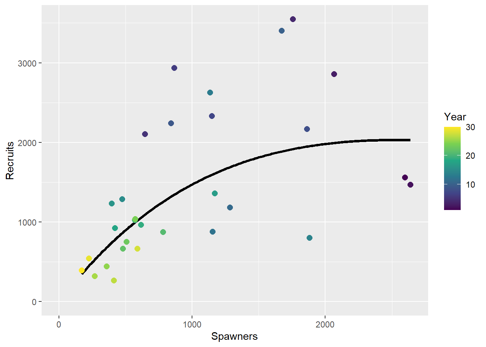
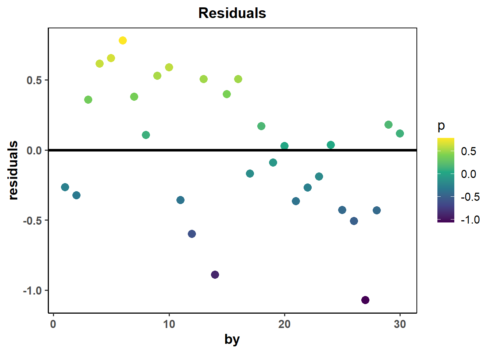
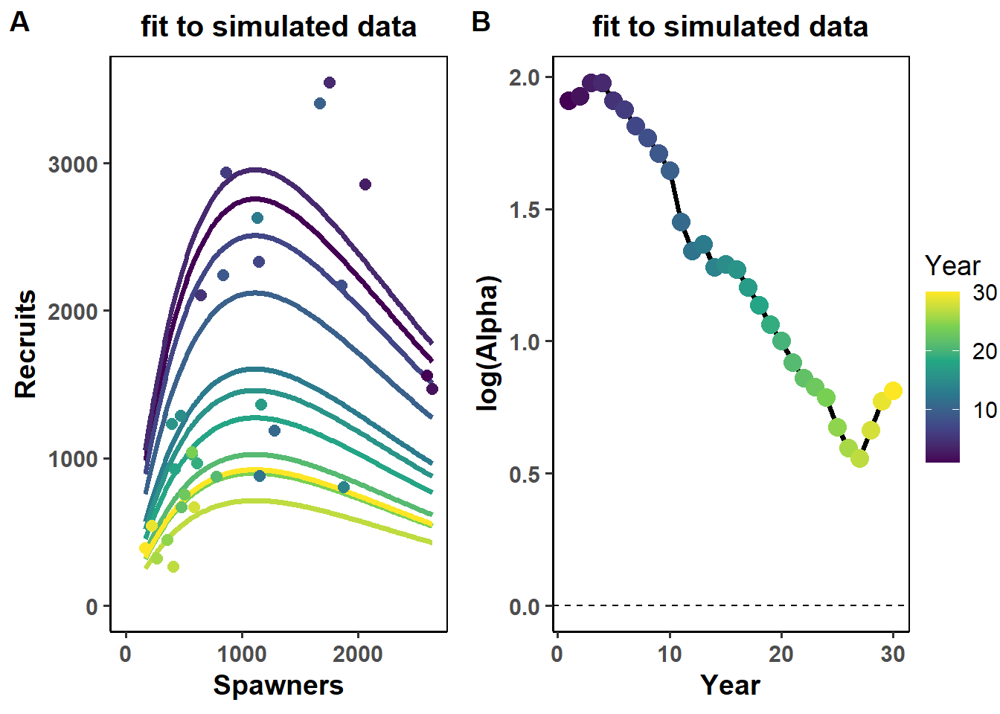
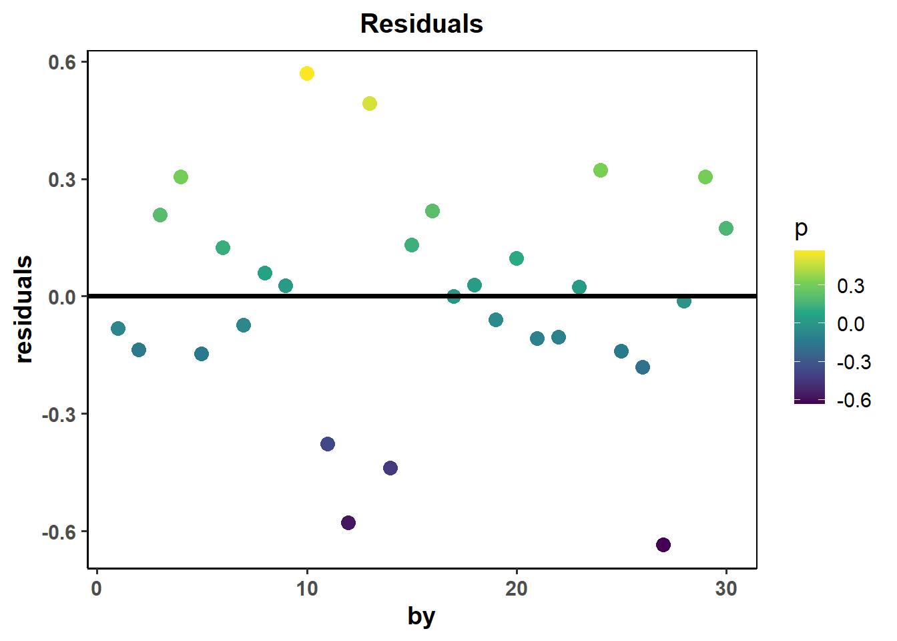
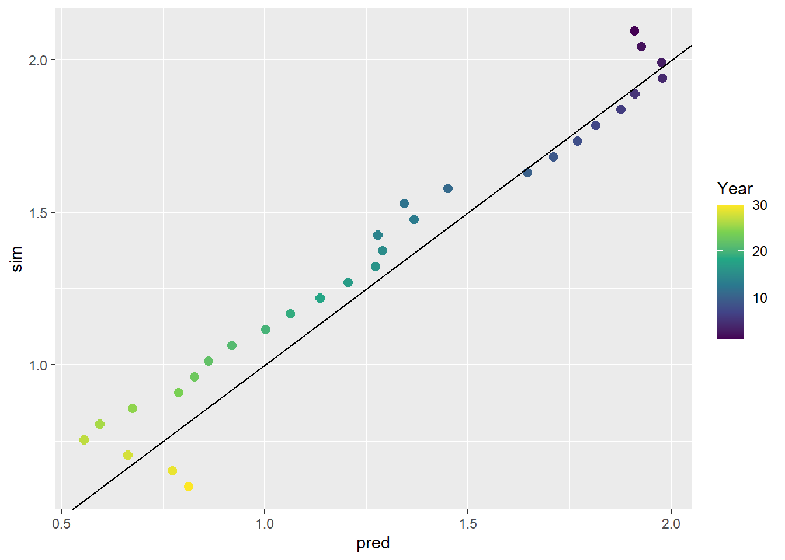
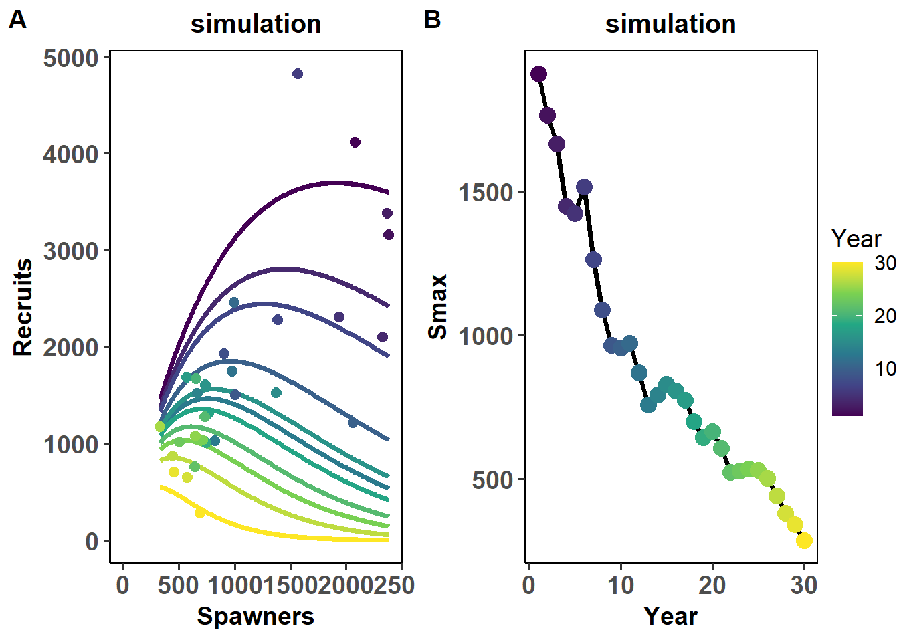
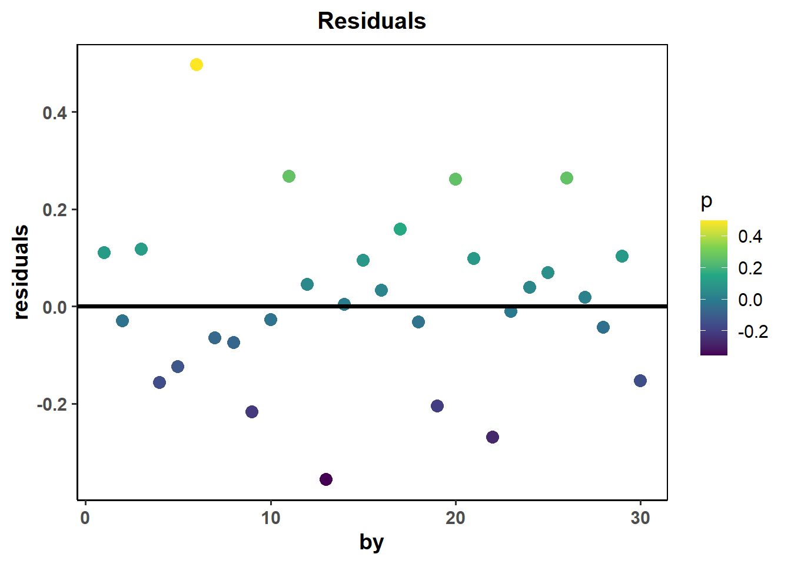
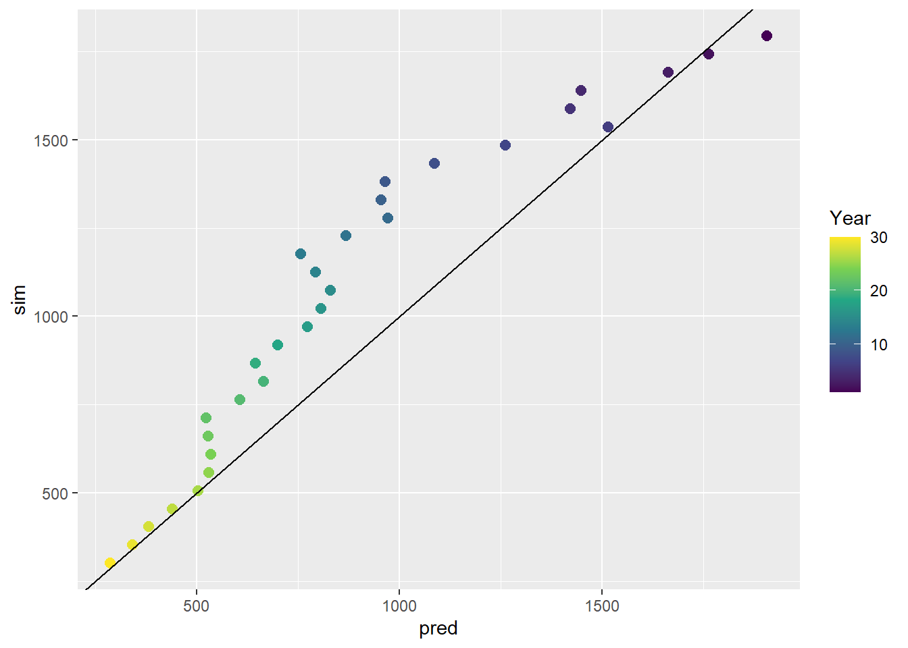

library(samEst);library(ggplot2)
#Function: this function gives a stochastic draw from a Ricker function with defined parameters
ricker_RS=function(alpha,beta,S,sigma){
RS=rnorm(1,alpha - beta*S,sigma) #this draws the realized productivity (log RS) with the specified level of error
return(RS)
}Exercise 2: Random Walk Ricker
In this exercise we’ll expand upon the previous simulation to examine what happens when the parameters of the Ricker curve are non-stationary in time - through several scenarios.
#E2: Non-stationary (aka time-varying, aka random walk) Ricker models
We’ll begin by simulating a spawner-recruit time-series from the Ricker function and to see how the parameters dictate this relationship, first start with these parameters.
Starting with changes in productivity (alpha):
#Simulation parameters:
N=30 #length of time-series
L=N+4 #length of time-series +4 for starting cohorts
#Key parameters: alpha, beta, and sigma
alpha <- seq(2.3,0.6, length.out=L) # productivity decline over 30 years
beta <- 1/(1000) # capacity rate -often easier to conceptualize as Smax (1/beta) as its far more interpretable
sigma <- 0.3 # ranges from ~0.2 to 1.5 for most Pacific salmon stocks
Seq <- alpha/beta # equilibrium spawners - just used for the simulation start points
#the rest of the simulation parameters
RS=numeric(L) #productivity in each year
S=numeric(L);S[1:4]=runif(4,Seq*0.8,Seq*1.2) #spawners in each year, we start with an initial escapement of 600 individuals
R=numeric(L) #recruits in each year
U=runif(L,0.4,0.6) #Harvest rate of cohorts with low variance
#(note U should be within the range of 0 to 1)
for(t in 5:L){
RS[t]=ricker_RS(alpha[t],beta,sigma,S=S[t-4]) #draw productivity in each year
R[t]=exp(RS[t])*S[t-4] #transform into recruits by converting logRS to RS (recruits per spawner) times spawners
S[t]=R[t]*U[t] #escapement left after harvest
}
#Pare down the time-series and align the spawners and recruit estimates (which are currently staggered 4 years)
S=S[-((L-3):L)] #Chop off the final spawner estimate to retain just the length L
R<-R[5:L]
RS<-RS[5:L]
df=data.frame(S=S,R=R,logRS=RS,by=seq(1:30)) #Make a dataframe with the required information for samEst
#We'll fit a stationary curve
m=lm(RS~S)
S_pred <-seq(min(S),max(S),length.out=200)
R_pred <- exp(m$coefficient[1]+m$coefficient[2]*S_pred)*S_pred
df_pred <- data.frame(S_pred = S_pred,
R_pred = R_pred)
ggplot2::ggplot(df, aes(S, R)) +
geom_line(data=df_pred,aes(x=S_pred,y=R_pred),linewidth=1.3)+
geom_point(aes(colour = by),size=2.5) +
scale_colour_viridis_c(name='Year')+
xlab("Spawners") +
ylab("Recruits")+
xlim(0, max(df$S))+
ylim(0, max(df$R))
Let’s look at the residuals too.
df$residuals<-m$residuals
ggplot(df, aes(by, residuals))+
geom_point(aes(colour = residuals), stroke=2)+
geom_hline(yintercept=0,linewidth=1.3)+
scale_colour_viridis_c(name='p')+
ggtitle("Residuals")+
theme_classic(14)+
theme(panel.background = element_blank(),strip.background = element_rect(colour=NA, fill=NA),panel.border = element_rect(fill = NA, color = "black"),
strip.text = element_text(face="bold", size=12),
axis.text=element_text(face="bold"),axis.title = element_text(face="bold"),plot.title = element_text(face = "bold", hjust = 0.5,size=15))
Let’s see if we can explicitly recover this trend using a Ricker model with time-varying (random walk) in productivity:
m_rwa_tmb<- samEst::ricker_rw_TMB(data=df,tv.par='a')iter: 1 value: 24.62745 mgc: 5.144704 ustep: 1
iter: 2 mgc: 1.776357e-15
iter: 1 mgc: 1.776357e-15
Matching hessian patterns... Done
outer mgc: 9.868581
iter: 1 value: -2.515942 mgc: 4.131064 ustep: 1
iter: 2 mgc: 5.77316e-15
iter: 1 mgc: 5.77316e-15
outer mgc: 9.966728
iter: 1 value: 4.860636 mgc: 21.02336 ustep: 1
iter: 2 mgc: 1.432188e-14
iter: 1 value: -1.868277 mgc: 4.86982 ustep: 1
iter: 2 mgc: 5.77316e-15
iter: 1 mgc: 5.77316e-15
outer mgc: 3.80889
iter: 1 value: -5.387981 mgc: 6.919607 ustep: 1
iter: 2 mgc: 8.437695e-15
iter: 1 value: -7.626753 mgc: 8.92846 ustep: 1
iter: 2 mgc: 8.881784e-15
iter: 1 mgc: 8.437695e-15
outer mgc: 4.824244
iter: 1 value: -8.664129 mgc: 14.90776 ustep: 1
iter: 2 mgc: 5.551115e-15
iter: 1 mgc: 5.551115e-15
outer mgc: 6.876101
iter: 1 value: -7.762644 mgc: 18.2354 ustep: 1
iter: 2 mgc: 1.376677e-14
iter: 1 mgc: 1.376677e-14
outer mgc: 10.4759
iter: 1 value: -13.83413 mgc: 7.373512 ustep: 1
iter: 2 mgc: 1.976197e-14
iter: 1 mgc: 1.976197e-14
outer mgc: 1.631209
iter: 1 value: -19.09233 mgc: 5.41235 ustep: 1
iter: 2 mgc: 1.953993e-14
iter: 1 value: -15.70165 mgc: 1.685361 ustep: 1
iter: 2 mgc: 1.559863e-14
iter: 1 mgc: 1.559863e-14
outer mgc: 1.317799
iter: 1 value: -16.83047 mgc: 1.975411 ustep: 1
iter: 2 mgc: 1.509903e-14
iter: 1 value: -16.17983 mgc: 0.737299 ustep: 1
iter: 2 mgc: 1.798561e-14
iter: 1 mgc: 1.798561e-14
outer mgc: 0.3906672
iter: 1 value: -16.27295 mgc: 1.913917 ustep: 1
iter: 2 mgc: 1.598721e-14
iter: 1 value: -16.3593 mgc: 1.957312 ustep: 1
iter: 2 mgc: 1.820766e-14
iter: 1 mgc: 1.820766e-14
outer mgc: 0.577347
iter: 1 value: -16.82392 mgc: 0.3988041 ustep: 1
iter: 2 mgc: 1.576517e-14
iter: 1 mgc: 1.576517e-14
outer mgc: 0.03893498
iter: 1 value: -16.70614 mgc: 0.0784632 ustep: 1
iter: 2 mgc: 1.64313e-14
iter: 1 mgc: 1.64313e-14
outer mgc: 0.01909413
iter: 1 value: -16.72122 mgc: 0.01167689 ustep: 1
iter: 2 mgc: 1.354472e-14
iter: 1 mgc: 1.354472e-14
outer mgc: 0.000537029
iter: 1 value: -16.72142 mgc: 0.0004802295 ustep: 1
iter: 2 mgc: 1.686151e-14
iter: 1 mgc: 1.686151e-14
outer mgc: 1.722921e-05
iter: 1 value: -16.7214 mgc: 1.761094e-05 ustep: 1
iter: 2 mgc: 1.287859e-14
iter: 1 mgc: 1.287859e-14
outer mgc: 4.967448e-08
iter: 1 mgc: 1.287859e-14
iter: 1 mgc: 1.287859e-14
outer mgc: 4.967448e-08
iter: 1 value: -16.72139 mgc: 0.04497269 ustep: 1
iter: 2 mgc: 8.437695e-15
outer mgc: 0.03379552
iter: 1 value: -16.72139 mgc: 0.04497269 ustep: 1
iter: 2 mgc: 1.332268e-14
outer mgc: 0.03379542
iter: 1 value: -16.72135 mgc: 0.02457816 ustep: 1
iter: 2 mgc: 1.509903e-14
outer mgc: 0.1035315
iter: 1 value: -16.72135 mgc: 0.02455359 ustep: 1
iter: 2 mgc: 1.310063e-14
outer mgc: 0.1032207
iter: 1 value: -16.7143 mgc: 0.01310714 ustep: 1
iter: 2 mgc: 1.376677e-14
outer mgc: 0.04034299
iter: 1 value: -16.72847 mgc: 0.01313338 ustep: 1
iter: 2 mgc: 1.24345e-14
outer mgc: 0.04038363
iter: 1 value: -16.69849 mgc: 0.01310714 ustep: 1
iter: 2 mgc: 1.376677e-14
outer mgc: 0.00840241
iter: 1 value: -16.74432 mgc: 0.01313338 ustep: 1
iter: 2 mgc: 1.409983e-14
outer mgc: 0.008406614
outer mgc: 796.7935 #m_rwa_tmb stores a lot of information - eg. maximum likelihood estimates for the different parameters, model code, etc.
#Examining the point estimates for max. productivity:
m_rwa_tmb$alpha [1] 1.9085432 1.9265222 1.9760574 1.9781479 1.9103316 1.8765408 1.8144194
[8] 1.7691515 1.7105258 1.6460341 1.4510144 1.3427480 1.3672067 1.2785778
[15] 1.2905663 1.2724269 1.2045190 1.1367309 1.0625430 1.0020670 0.9194167
[22] 0.8614956 0.8274986 0.7882602 0.6754293 0.5949778 0.5562666 0.6631924
[29] 0.7730611 0.8129001#Plot the fit to the data
samEst::sr_plot(df=df,mod=m_rwa_tmb,type='rw',par='a',form='tmb',title='fit to simulated data')
#plot residuals
df$residuals<-m_rwa_tmb$residuals
ggplot(df, aes(by, residuals))+
geom_point(aes(colour = residuals), stroke=2)+
geom_hline(yintercept=0,linewidth=1.3)+
scale_colour_viridis_c(name='p')+
ggtitle("Residuals")+
theme_classic(14)+
theme(panel.background = element_blank(),strip.background = element_rect(colour=NA, fill=NA),panel.border = element_rect(fill = NA, color = "black"),
strip.text = element_text(face="bold", size=12),
axis.text=element_text(face="bold"),axis.title = element_text(face="bold"),plot.title = element_text(face = "bold", hjust = 0.5,size=15))
How does it compare to the true underlying values?
pred_sim=data.frame(pred=m_rwa_tmb$alpha,sim=alpha[5:L])
ggplot2::ggplot(pred_sim, aes(pred, sim)) +
geom_point(aes(colour = as.numeric(rownames(pred_sim))),size=2.5) +
scale_colour_viridis_c(name='Year')+geom_abline(intercept=0,slope=1)
Was it able to capture the underlying trend? Try changing the parameters (time-series length, trend - upwards/magnitude, sigma, etc.).
You can also make the dynamics of alpha more complex or more random - feel free to use these in the simulation code above instead:
#alpha=rnorm(L,1.5,0.5) White noise in productivity
#Or a random walk: which is how it is also modelled
#alpha=1.5
#sig_a=0.5
#for(t in 2:L){alpha[t]=alpha[t-1]+rnorm(1,0,1)*sig_a}Let’s try with changing capacity next:
#Simulation parameters:
N=30 #length of time-series
L=N+4 #length of time-series +4 for starting cohorts
RS=numeric(L) #productivity in each year
S=numeric(L);S[1:4]=runif(4,Seq*0.8,Seq*1.2) #spawners in each year, we start with an initial escapement of 600 individuals
R=numeric(L) #recruits in each year
U=runif(L,0.4,0.6) #Harvest rate of cohorts with low variance
#(note U should be within the range of 0 to 1)
#Key parameters: alpha, beta, and sigma
alpha<- 1.5 # productivity decline over 30 years
Smax<- seq(2000,300,length.out=L) #Express as Smax first, just easier to conceptualize
beta<- 1/Smax # capacity rate -often easier to conceptualize as Smax (1/beta) as its far more interpretable
sigma<- 0.3 # ranges from ~0.2 to 1.5 for most Pacific salmon stocks
Seq<-alpha/beta # equilibrium spawners - just used for the simulation start points
for(t in 5:L){
RS[t]=ricker_RS(alpha,beta[t],sigma,S=S[t-4]) #draw productivity in each year
R[t]=exp(RS[t])*S[t-4] #transform into recruits by converting logRS to RS (recruits per spawner) times spawners
S[t]=R[t]*U[t] #escapement left after harvest
}
#Pare down the time-series and align the spawners and recruit estimates (which are currently staggered 4 years)
S=S[-((L-3):L)] #Chop off the final spawner estimate to retain just the length L
R<-R[5:L]
RS<-RS[5:L]
df=data.frame(S=S,R=R,logRS=RS,by=seq(1:30)) #Make a dataframe with the required information for samEstLet’s see if we can explicitly recover this trend now using a Ricker model with time-varying (random walk) in capacity:
m_rwb_tmb<- samEst::ricker_rw_TMB(data=df,tv.par='b')iter: 1 value: 4.388106 mgc: 0.9982607 ustep: 1
iter: 2 value: 4.210638 mgc: 0.2773415 ustep: 1
iter: 3 value: 4.197884 mgc: 0.03153305 ustep: 1
iter: 4 value: 4.197745 mgc: 0.003303043 ustep: 1
iter: 5 value: 4.197745 mgc: 4.129215e-05 ustep: 1
iter: 6 mgc: 5.909213e-09
iter: 1 mgc: 5.909213e-09
Matching hessian patterns... Done
outer mgc: 14.51528
iter: 1 value: -1.133102 mgc: 9.180934 ustep: 0.1336527
iter: 2 value: -4.957587 mgc: 3.203439 ustep: 0.3656489
iter: 3 value: -5.161468 mgc: 2.303733 ustep: 0.6047286
iter: 4 value: -5.163241 mgc: 0.1799977 ustep: 0.7776652
iter: 5 value: -5.163246 mgc: 0.002361278 ustep: 0.8818651
iter: 6 value: -5.163246 mgc: 7.033724e-05 ustep: 0.9390828
iter: 7 value: -5.163246 mgc: 1.190474e-06 ustep: 0.969066
iter: 8 value: -5.163246 mgc: 1.006799e-08 ustep: 0.984413
mgc: 4.253486e-11
iter: 1 mgc: 4.253486e-11
outer mgc: 32.48748
iter: 1 value: 9.141726 mgc: 3.833261 ustep: 0.4367355
iter: 2 value: -8.864784 mgc: 23.34792 ustep: 0.6608936
iter: 3 value: -10.98617 mgc: 6.248276 ustep: 0.8129723
iter: 4 value: -11.05893 mgc: 1.023256 ustep: 0.9016596
iter: 5 value: -11.05915 mgc: 0.04891238 ustep: 0.9495626
iter: 6 value: -11.05915 mgc: 0.0002359265 ustep: 0.9744576
iter: 7 value: -11.05915 mgc: 6.12965e-07 ustep: 0.9871475
iter: 8 mgc: 1.234065e-09
iter: 1 mgc: 1.234065e-09
outer mgc: 5.485899
iter: 1 value: -11.88325 mgc: 8.63258 ustep: 1
iter: 2 value: -12.26505 mgc: 2.375157 ustep: 1
iter: 3 value: -12.26672 mgc: 0.1831818 ustep: 1
iter: 4 value: -12.26672 mgc: 0.001339473 ustep: 1
iter: 5 value: -12.26672 mgc: 7.09439e-08 ustep: 1
mgc: 2.220446e-14
iter: 1 mgc: 2.220446e-14
outer mgc: 3.105425
iter: 1 value: -22.46051 mgc: 10.71584 ustep: 1
iter: 2 value: -22.4711 mgc: 0.5077901 ustep: 1
iter: 3 value: -22.4711 mgc: 0.002212323 ustep: 1
iter: 4 value: -22.4711 mgc: 1.129048e-07 ustep: 1
iter: 5 mgc: 6.483702e-14
iter: 1 mgc: 6.483702e-14
outer mgc: 7.090929
iter: 1 value: -24.72498 mgc: 24.80738 ustep: 1
iter: 2 value: -25.95168 mgc: 3.450557 ustep: 1
iter: 3 value: -25.95799 mgc: 0.2245068 ustep: 1
iter: 4 value: -25.95799 mgc: 0.001543503 ustep: 1
iter: 5 value: -25.95799 mgc: 8.95103e-08 ustep: 1
mgc: 7.904788e-14
iter: 1 mgc: 7.904788e-14
outer mgc: 5.906363
iter: 1 value: 9.067244 mgc: 23.63042 ustep: 0.2494656
iter: 2 value: -24.88677 mgc: 27.90103 ustep: 0.4995153
iter: 3 value: -26.77648 mgc: 5.115251 ustep: 0.7067933
iter: 4 value: -26.79032 mgc: 0.4764254 ustep: 0.8407259
iter: 5 value: -26.79032 mgc: 0.006241159 ustep: 0.9169194
iter: 6 value: -26.79032 mgc: 1.09973e-05 ustep: 0.9575633
iter: 7 value: -26.79032 mgc: 1.050488e-08 ustep: 0.9785538
mgc: 5.834e-12
iter: 1 value: -26.5574 mgc: 4.682325 ustep: 1
iter: 2 value: -26.63951 mgc: 0.8574847 ustep: 1
iter: 3 value: -26.63955 mgc: 0.01912719 ustep: 1
iter: 4 value: -26.63955 mgc: 1.105043e-05 ustep: 1
iter: 5 mgc: 4.150458e-12
iter: 1 mgc: 4.150458e-12
outer mgc: 1.386792
iter: 1 value: -28.56852 mgc: 6.321813 ustep: 1
iter: 2 value: -28.58142 mgc: 0.4633251 ustep: 1
iter: 3 value: -28.58142 mgc: 0.003213302 ustep: 1
iter: 4 value: -28.58142 mgc: 2.162942e-07 ustep: 1
iter: 5 mgc: 6.394885e-14
iter: 1 value: -26.88684 mgc: 0.9487669 ustep: 1
iter: 2 value: -26.88691 mgc: 0.02307396 ustep: 1
iter: 3 value: -26.88691 mgc: 1.52206e-05 ustep: 1
iter: 4 mgc: 6.306511e-12
iter: 1 mgc: 6.306511e-12
outer mgc: 0.6594737
iter: 1 value: -26.94111 mgc: 1.574749 ustep: 1
iter: 2 value: -26.94111 mgc: 0.0114688 ustep: 1
iter: 3 value: -26.94111 mgc: 8.410925e-07 ustep: 1
iter: 4 mgc: 9.414691e-14
iter: 1 mgc: 9.414691e-14
outer mgc: 0.2918587
iter: 1 value: -26.22516 mgc: 1.004481 ustep: 1
iter: 2 value: -26.22522 mgc: 0.02070284 ustep: 1
iter: 3 value: -26.22522 mgc: 1.297786e-05 ustep: 1
iter: 4 mgc: 4.796608e-12
iter: 1 mgc: 4.796608e-12
outer mgc: 0.3016025
iter: 1 value: -26.26259 mgc: 1.261077 ustep: 1
iter: 2 value: -26.26261 mgc: 0.01603469 ustep: 1
iter: 3 value: -26.26261 mgc: 4.701086e-06 ustep: 1
iter: 4 mgc: 5.758727e-13
iter: 1 value: -26.30846 mgc: 0.240936 ustep: 1
iter: 2 value: -26.30846 mgc: 0.0009987522 ustep: 1
iter: 3 value: -26.30846 mgc: 2.635378e-08 ustep: 1
mgc: 7.727152e-14
iter: 1 mgc: 7.727152e-14
outer mgc: 0.09469592
iter: 1 value: -26.27544 mgc: 0.3836849 ustep: 1
iter: 2 value: -26.27544 mgc: 0.002179204 ustep: 1
iter: 3 value: -26.27544 mgc: 1.209715e-07 ustep: 1
iter: 4 mgc: 8.482104e-14
iter: 1 mgc: 8.482104e-14
outer mgc: 0.07361036
iter: 1 value: -26.2363 mgc: 0.3313219 ustep: 1
iter: 2 value: -26.2363 mgc: 0.001238261 ustep: 1
iter: 3 value: -26.2363 mgc: 1.759081e-08 ustep: 1
mgc: 6.805667e-14
iter: 1 mgc: 6.805667e-14
outer mgc: 0.05243878
iter: 1 value: -26.19904 mgc: 0.1497644 ustep: 1
iter: 2 value: -26.19904 mgc: 0.0005887332 ustep: 1
iter: 3 value: -26.19904 mgc: 1.024662e-08 ustep: 1
mgc: 5.595524e-14
iter: 1 value: -26.2247 mgc: 0.0724783 ustep: 1
iter: 2 value: -26.2247 mgc: 0.0001141678 ustep: 1
iter: 3 mgc: 3.554694e-10
iter: 1 mgc: 3.554694e-10
outer mgc: 0.02088576
iter: 1 value: -26.21524 mgc: 0.02931628 ustep: 1
iter: 2 value: -26.21524 mgc: 5.999814e-06 ustep: 1
iter: 3 mgc: 3.801404e-13
iter: 1 mgc: 3.801404e-13
outer mgc: 0.003050092
iter: 1 value: -26.2129 mgc: 0.01989212 ustep: 1
iter: 2 value: -26.2129 mgc: 2.12544e-06 ustep: 1
iter: 3 mgc: 9.148238e-14
iter: 1 mgc: 9.148238e-14
outer mgc: 0.002551534
iter: 1 value: -26.21394 mgc: 0.009591714 ustep: 1
iter: 2 value: -26.21394 mgc: 4.848527e-07 ustep: 1
iter: 3 mgc: 5.595524e-14
iter: 1 mgc: 5.595524e-14
outer mgc: 4.323139e-06
iter: 1 value: -26.21394 mgc: 6.846513e-06 ustep: 1
iter: 2 mgc: 2.895462e-13
iter: 1 mgc: 2.895462e-13
outer mgc: 5.637657e-08
iter: 1 mgc: 2.895462e-13
iter: 1 mgc: 2.895462e-13
outer mgc: 5.637657e-08
iter: 1 value: -26.2143 mgc: 0.04236955 ustep: 1
iter: 2 value: -26.2143 mgc: 7.577601e-06 ustep: 1
iter: 3 mgc: 2.88769e-13
outer mgc: 0.02339431
iter: 1 value: -26.21357 mgc: 0.04236955 ustep: 1
iter: 2 value: -26.21357 mgc: 7.572407e-06 ustep: 1
iter: 3 mgc: 2.741141e-13
outer mgc: 0.02338694
iter: 1 value: -26.22253 mgc: 0.04880494 ustep: 1
iter: 2 value: -26.22253 mgc: 5.525227e-05 ustep: 1
iter: 3 mgc: 8.513479e-11
outer mgc: 0.04058176
iter: 1 value: -26.20532 mgc: 0.04880494 ustep: 1
iter: 2 value: -26.20532 mgc: 5.505536e-05 ustep: 1
iter: 3 mgc: 8.476353e-11
outer mgc: 0.04062975
iter: 1 value: -26.20234 mgc: 0.02079656 ustep: 1
iter: 2 value: -26.20234 mgc: 1.51332e-06 ustep: 1
iter: 3 mgc: 6.639134e-14
outer mgc: 0.02914234
iter: 1 value: -26.22553 mgc: 0.0208382 ustep: 1
iter: 2 value: -26.22553 mgc: 1.516315e-06 ustep: 1
iter: 3 mgc: 5.995204e-14
outer mgc: 0.02915004
iter: 1 value: -26.19554 mgc: 0.02079656 ustep: 1
iter: 2 value: -26.19554 mgc: 1.513285e-06 ustep: 1
iter: 3 mgc: 7.904788e-14
outer mgc: 0.01542323
iter: 1 value: -26.23234 mgc: 0.0208382 ustep: 1
iter: 2 value: -26.23234 mgc: 1.51635e-06 ustep: 1
iter: 3 mgc: 6.655787e-14
outer mgc: 0.0154326
outer mgc: 1220.843 #The series for Smax
m_rwb_tmb$Smax [1] 1907.4541 1764.3546 1663.7961 1448.3297 1422.6766 1514.7855 1262.0062
[8] 1087.6510 965.6461 955.3569 972.5347 868.5849 757.0666 793.7644
[15] 831.1571 807.5125 773.3585 700.4985 645.3167 665.2022 606.9241
[22] 523.2139 527.9118 535.2056 529.5747 503.4339 440.9084 382.7320
[29] 342.5886 287.3124samEst::sr_plot(df=df,mod=m_rwb_tmb,type='rw',par='b',form='tmb',title='simulation')
Let’s look at the residuals too.
df$residuals<-m_rwb_tmb$residuals
ggplot(df, aes(by, residuals))+
geom_point(aes(colour = residuals), stroke=2)+
geom_hline(yintercept=0,linewidth=1.3)+
scale_colour_viridis_c(name='p')+
ggtitle("Residuals")+
theme_classic(14)+
theme(panel.background = element_blank(),strip.background = element_rect(colour=NA, fill=NA),panel.border = element_rect(fill = NA, color = "black"),
strip.text = element_text(face="bold", size=12),
axis.text=element_text(face="bold"),axis.title = element_text(face="bold"),plot.title = element_text(face = "bold", hjust = 0.5,size=15))
pred_sim=data.frame(pred=m_rwb_tmb$Smax,sim=Smax[5:L])
ggplot2::ggplot(pred_sim, aes(pred, sim)) +
geom_point(aes(colour = as.numeric(rownames(pred_sim))),size=2.5) +
scale_colour_viridis_c(name='Year')+geom_abline(intercept=0,slope=1)
Of course, in reality we cannot know a priori which parameter is changing just by examining the spawner-recruitment plot (although we may have some system/ecological knowledge pointing towards either a change in productivity or capacity).
We can compare model fits with either formulation to the above scenario where capacity is changing. You can pull out two information criteria that balance the model likelihood with parsimony (by penalizing more complex models) - AIC (Akaike Informtaion Criterion, adjusted for small sample sizes) or BIC (Bayesian Information Criterion), the latter tends to be more conservative in terms of penalizing complexity.
#We will fit the random walk alpha model to the dataset generated with a capacity change
m_rwa_tmb<- samEst::ricker_rw_TMB(data=df,tv.par='a')iter: 1 value: 24.58765 mgc: 6.972869 ustep: 1
iter: 2 mgc: 1.776357e-15
iter: 1 mgc: 1.776357e-15
Matching hessian patterns... Done
outer mgc: 9.846179
iter: 1 value: -1.562779 mgc: 3.075228 ustep: 1
iter: 2 mgc: 5.77316e-15
iter: 1 mgc: 5.77316e-15
outer mgc: 11.12126
iter: 1 value: -9.143615 mgc: 19.68666 ustep: 1
iter: 2 mgc: 7.993606e-15
iter: 1 mgc: 7.993606e-15
outer mgc: 9.343322
iter: 1 value: -6.463396 mgc: 7.971551 ustep: 1
iter: 2 mgc: 2.398082e-14
iter: 1 value: -12.95264 mgc: 2.003908 ustep: 1
iter: 2 mgc: 9.769963e-15
iter: 1 mgc: 9.769963e-15
outer mgc: 3.754824
iter: 1 value: -15.76706 mgc: 1.677064 ustep: 1
iter: 2 mgc: 1.562639e-14
iter: 1 mgc: 1.562639e-14
outer mgc: 2.650163
iter: 1 value: -16.525 mgc: 10.06086 ustep: 1
iter: 2 mgc: 1.64313e-14
iter: 1 mgc: 1.64313e-14
outer mgc: 3.557375
iter: 1 value: -18.52529 mgc: 9.649156 ustep: 1
iter: 2 mgc: 1.731948e-14
iter: 1 mgc: 1.731948e-14
outer mgc: 1.565853
iter: 1 value: -17.37822 mgc: 10.96339 ustep: 1
iter: 2 mgc: 1.687539e-14
iter: 1 mgc: 1.687539e-14
outer mgc: 1.754009
iter: 1 value: -16.31541 mgc: 11.23573 ustep: 1
iter: 2 mgc: 1.731948e-14
iter: 1 mgc: 1.731948e-14
outer mgc: 2.944105
iter: 1 value: -14.33666 mgc: 7.873869 ustep: 1
iter: 2 mgc: 1.110223e-14
iter: 1 value: -12.19201 mgc: 8.917718 ustep: 1
iter: 2 mgc: 1.776357e-14
iter: 1 value: -7.10704 mgc: 25.58436 ustep: 1
iter: 2 mgc: 2.181588e-14
iter: 1 mgc: 1.776357e-14
outer mgc: 0.8735373
iter: 1 value: -3.714694 mgc: 23.6978 ustep: 1
iter: 2 mgc: 8.493206e-15
iter: 1 value: -10.39655 mgc: 5.588016 ustep: 1
iter: 2 mgc: 1.409983e-14
iter: 1 mgc: 1.409983e-14
outer mgc: 0.8478495
iter: 1 value: -10.54716 mgc: 6.413682 ustep: 1
iter: 2 mgc: 1.487699e-14
iter: 1 mgc: 1.487699e-14
outer mgc: 2.244845
iter: 1 value: -9.678623 mgc: 2.856903 ustep: 1
iter: 2 mgc: 1.185163e-14
iter: 1 mgc: 1.185163e-14
outer mgc: 0.9932415
iter: 1 value: -10.23161 mgc: 1.554396 ustep: 1
iter: 2 mgc: 1.199041e-14
iter: 1 mgc: 1.199041e-14
outer mgc: 0.3040919
iter: 1 value: -10.29215 mgc: 0.5897544 ustep: 1
iter: 2 mgc: 5.77316e-15
iter: 1 mgc: 5.77316e-15
outer mgc: 0.12704
iter: 1 value: -10.34167 mgc: 0.1368472 ustep: 1
iter: 2 mgc: 1.321165e-14
iter: 1 mgc: 1.321165e-14
outer mgc: 0.008445711
iter: 1 value: -10.33251 mgc: 0.02779169 ustep: 1
iter: 2 mgc: 1.64313e-14
iter: 1 mgc: 1.64313e-14
outer mgc: 0.0003992752
iter: 1 value: -10.33282 mgc: 0.001161902 ustep: 1
iter: 2 mgc: 1.132427e-14
iter: 1 mgc: 1.132427e-14
outer mgc: 0.0001286068
iter: 1 value: -10.33281 mgc: 0.0001251354 ustep: 1
iter: 2 mgc: 1.215694e-14
iter: 1 mgc: 1.215694e-14
outer mgc: 8.901125e-06
iter: 1 mgc: 1.215694e-14
iter: 1 mgc: 1.215694e-14
outer mgc: 8.901125e-06
iter: 1 value: -10.3328 mgc: 0.01802031 ustep: 1
iter: 2 mgc: 6.661338e-15
outer mgc: 0.02415853
iter: 1 value: -10.3328 mgc: 0.01802031 ustep: 1
iter: 2 mgc: 7.105427e-15
outer mgc: 0.02417633
iter: 1 value: -10.33277 mgc: 0.0410294 ustep: 1
iter: 2 mgc: 1.154632e-14
outer mgc: 0.07767607
iter: 1 value: -10.33277 mgc: 0.04098839 ustep: 1
iter: 2 mgc: 1.709743e-14
outer mgc: 0.07742481
iter: 1 value: -10.31956 mgc: 0.01472485 ustep: 1
iter: 2 mgc: 8.548717e-15
outer mgc: 0.02239956
iter: 1 value: -10.34604 mgc: 0.01475433 ustep: 1
iter: 2 mgc: 1.287859e-14
outer mgc: 0.02239558
iter: 1 value: -10.31604 mgc: 0.01472485 ustep: 1
iter: 2 mgc: 1.332268e-14
outer mgc: 0.01534489
iter: 1 value: -10.34956 mgc: 0.01475433 ustep: 1
iter: 2 mgc: 8.826273e-15
outer mgc: 0.01534808
outer mgc: 838.4421 m_rwa_tmb$AICc[1] -3.487276m_rwb_tmb$AICc[1] -7.04033#The lower AICc == higher model likelihood
m_rwa_tmb$BIC[1] 0.5175137m_rwb_tmb$BIC[1] -3.035541#The lower BIC == higher model likelihoodWe can even estimate with both parameters - but it can have convergence issues so beware…
m_rwab_tmb<- samEst::ricker_rw_TMB(data=df,tv.par='both')iter: 1 value: -17.3432 mgc: 6.971785 ustep: 0.6827823
iter: 2 value: -17.48924 mgc: 0.2889783 ustep: 0.8263238
iter: 3 value: -17.56875 mgc: 0.0337958 ustep: 0.9090326
iter: 4 value: -17.64586 mgc: 0.03316119 ustep: 0.9534367
iter: 5 value: -17.70761 mgc: 0.04871371 ustep: 0.9764432
iter: 6 value: -17.75088 mgc: 0.09202074 ustep: 0.9881526
iter: 7 value: -17.77156 mgc: 0.1239857 ustep: 0.9940592
iter: 8 value: -17.77472 mgc: 0.04500916 ustep: 0.9970255
iter: 9 value: -17.7748 mgc: 0.009981972 ustep: 0.9985118
iter: 10 value: -17.7748 mgc: 0.00018181 ustep: 0.9992557
iter: 11 value: -17.7748 mgc: 1.145405e-06 ustep: 0.9996278
iter: 12 mgc: 4.382472e-09
iter: 1 mgc: 4.382472e-09
Matching hessian patterns... Done
outer mgc: 12.7923
iter: 1 value: -44.49371 mgc: 28.91021 ustep: 1
iter: 2 value: -53.52214 mgc: 5.716719 ustep: 1
iter: 3 value: -53.53918 mgc: 0.04645853 ustep: 1
iter: 4 value: -53.53919 mgc: 0.00279305 ustep: 1
iter: 5 value: -53.53919 mgc: 9.112085e-08 ustep: 1
iter: 6 mgc: 4.203304e-13
iter: 1 mgc: 4.203304e-13
outer mgc: 5.833884
iter: 1 value: -54.96746 mgc: 27.16906 ustep: 0.6827823
iter: 2 value: -58.97045 mgc: 3.378644 ustep: 0.8263238
iter: 3 value: -62.41477 mgc: 4.252231 ustep: 0.9090326
iter: 4 value: -64.20729 mgc: 3.999497 ustep: 0.9534367
iter: 5 value: -64.61012 mgc: 2.091932 ustep: 0.9764432
iter: 6 value: -64.63846 mgc: 0.7859578 ustep: 0.9881526
iter: 7 value: -64.63868 mgc: 0.04507631 ustep: 0.9940592
iter: 8 value: -64.63868 mgc: 0.0006507873 ustep: 0.9970255
iter: 9 value: -64.63868 mgc: 2.796584e-07 ustep: 0.9985118
iter: 10 mgc: 4.380425e-10
iter: 1 value: -57.96669 mgc: 8.317537 ustep: 1
iter: 2 value: -57.9677 mgc: 0.04776937 ustep: 1
iter: 3 value: -57.9677 mgc: 1.117947e-05 ustep: 1
iter: 4 mgc: 3.784164e-10
iter: 1 mgc: 3.784164e-10
outer mgc: 3.091607
iter: 1 value: -59.32531 mgc: 24.97885 ustep: 1
iter: 2 value: -59.32755 mgc: 0.05987547 ustep: 1
iter: 3 value: -59.32755 mgc: 9.006007e-05 ustep: 1
iter: 4 value: -59.32755 mgc: 1.627006e-08 ustep: 1
iter: 5 mgc: 4.045653e-13
iter: 1 mgc: 4.045653e-13
outer mgc: 3.221841
iter: 1 value: -63.12528 mgc: 24.08489 ustep: 1
iter: 2 value: -63.1937 mgc: 0.3546173 ustep: 1
iter: 3 value: -63.19375 mgc: 0.003198018 ustep: 1
iter: 4 value: -63.19375 mgc: 5.52737e-05 ustep: 1
iter: 5 mgc: 1.716018e-10
iter: 1 value: -74.51415 mgc: 106.9639 ustep: 1
iter: 2 value: -76.35509 mgc: 2.953712 ustep: 1
iter: 3 value: -76.36825 mgc: 0.1937805 ustep: 1
iter: 4 value: -76.36828 mgc: 0.01286286 ustep: 1
iter: 5 value: -76.36828 mgc: 1.705861e-05 ustep: 1
iter: 6 mgc: 6.39349e-10
iter: 1 mgc: 6.39349e-10
outer mgc: 7.397649
iter: 1 value: -83.65436 mgc: 315.8121 ustep: 0.6827823
iter: 2 value: -90.81886 mgc: 15.58326 ustep: 0.8263238
iter: 3 value: -90.895 mgc: 0.9742736 ustep: 0.9090326
iter: 4 value: -90.89566 mgc: 0.04872874 ustep: 0.9534367
iter: 5 value: -90.89566 mgc: 0.0005267632 ustep: 0.9764432
iter: 6 value: -90.89566 mgc: 9.451587e-06 ustep: 0.9881526
iter: 7 value: -90.89566 mgc: 1.116715e-07 ustep: 0.9940592
iter: 8 mgc: 6.945893e-10
iter: 1 mgc: 6.945893e-10
outer mgc: 9.187339
iter: 1 value: -62.63715 mgc: 26.38714 ustep: 1
iter: 2 value: -62.80794 mgc: 2.117217 ustep: 1
iter: 3 value: -62.80823 mgc: 0.05901058 ustep: 1
iter: 4 value: -62.80823 mgc: 0.0002957325 ustep: 1
iter: 5 mgc: 6.038367e-09
iter: 1 mgc: 6.038367e-09
outer mgc: 6.395478
iter: 1 value: -50.10259 mgc: 40.76068 ustep: 1
iter: 2 value: -59.99031 mgc: 18.24806 ustep: 1
iter: 3 value: -60.37387 mgc: 1.976021 ustep: 1
iter: 4 value: -60.39709 mgc: 0.6875786 ustep: 1
iter: 5 value: -60.39714 mgc: 0.01595809 ustep: 1
iter: 6 value: -60.39714 mgc: 0.0001399061 ustep: 1
iter: 7 mgc: 1.401974e-09
iter: 1 value: -65.3478 mgc: 13.07547 ustep: 1
iter: 2 value: -65.36539 mgc: 0.9090291 ustep: 1
iter: 3 value: -65.3654 mgc: 0.01514178 ustep: 1
iter: 4 value: -65.3654 mgc: 4.831716e-05 ustep: 1
iter: 5 mgc: 1.831753e-10
iter: 1 mgc: 1.831753e-10
outer mgc: 2.021578
iter: 1 value: -76.06869 mgc: 9.636752 ustep: 1
iter: 2 value: -76.06888 mgc: 0.08832424 ustep: 1
iter: 3 value: -76.06888 mgc: 8.069884e-05 ustep: 1
iter: 4 mgc: 3.865786e-10
iter: 1 mgc: 3.865786e-10
outer mgc: 2.644912
iter: 1 value: -80.76896 mgc: 13.5627 ustep: 1
iter: 2 value: -80.76912 mgc: 0.06119268 ustep: 1
iter: 3 value: -80.76912 mgc: 6.035356e-05 ustep: 1
iter: 4 mgc: 7.593171e-11
iter: 1 value: -90.814 mgc: 73.03643 ustep: 1
iter: 2 value: -90.82394 mgc: 0.3202959 ustep: 1
iter: 3 value: -90.82394 mgc: 0.001474278 ustep: 1
iter: 4 value: -90.82394 mgc: 1.224315e-07 ustep: 1
iter: 5 mgc: 1.172396e-13
iter: 1 mgc: 1.172396e-13
outer mgc: 1.532239
iter: 1 value: -112.0234 mgc: 343.6202 ustep: 1
iter: 2 value: -112.0261 mgc: 0.311303 ustep: 1
iter: 3 value: -112.0261 mgc: 0.001770474 ustep: 1
iter: 4 value: -112.0261 mgc: 6.653303e-08 ustep: 1
mgc: 7.034373e-13
iter: 1 mgc: 7.034373e-13
outer mgc: 3.926958
iter: 1 value: -131.9146 mgc: 2375.538 ustep: 1
iter: 2 value: -132.015 mgc: 1.101124 ustep: 1
iter: 3 value: -132.0151 mgc: 0.02549371 ustep: 1
iter: 4 value: -132.0151 mgc: 2.90241e-05 ustep: 1
iter: 5 mgc: 6.948842e-11
iter: 1 mgc: 6.948842e-11
outer mgc: 2.954511
iter: 1 value: -130.6132 mgc: 928.0573 ustep: 1
iter: 2 value: -130.6302 mgc: 0.6311404 ustep: 1
iter: 3 value: -130.6302 mgc: 0.005179676 ustep: 1
iter: 4 value: -130.6302 mgc: 7.168809e-07 ustep: 1
iter: 5 mgc: 2.328915e-12
iter: 1 mgc: 2.328915e-12
outer mgc: 0.5095955
iter: 1 value: -135.9589 mgc: 306.4479 ustep: 1
iter: 2 value: -135.9589 mgc: 0.02193421 ustep: 1
iter: 3 value: -135.9589 mgc: 7.266123e-06 ustep: 1
iter: 4 mgc: 3.259615e-12
iter: 1 mgc: 3.259615e-12
outer mgc: 0.1957041
iter: 1 value: -136.746 mgc: 5.542508 ustep: 1
iter: 2 value: -136.746 mgc: 0.0002781024 ustep: 1
iter: 3 mgc: 1.07047e-09
iter: 1 mgc: 1.07047e-09
outer mgc: 0.1191211
iter: 1 value: -136.7282 mgc: 1.855574 ustep: 1
iter: 2 value: -136.7282 mgc: 2.803917e-05 ustep: 1
iter: 3 mgc: 9.479528e-12
iter: 1 mgc: 9.479528e-12
outer mgc: 0.1186302
iter: 1 value: -136.7203 mgc: 3.86015 ustep: 1
iter: 2 value: -136.7203 mgc: 4.332513e-06 ustep: 1
iter: 3 mgc: 3.755218e-12
iter: 1 mgc: 3.755218e-12
outer mgc: 0.1187605
iter: 1 value: -136.7204 mgc: 0.1274413 ustep: 1
iter: 2 mgc: 4.774969e-09
iter: 1 mgc: 4.774969e-09
outer mgc: 0.1187608
iter: 1 value: -136.7204 mgc: 0.001331558 ustep: 1
iter: 2 mgc: 3.697664e-11
iter: 1 mgc: 3.697664e-11
outer mgc: 0.1187607
iter: 1 value: -136.7204 mgc: 0.0004395626 ustep: 1
iter: 2 mgc: 3.316014e-12
iter: 1 mgc: 3.316014e-12
outer mgc: 0.1187607
iter: 1 value: -136.7204 mgc: 1.133869e-05 ustep: 1
mgc: 3.28515e-12
iter: 1 mgc: 3.316014e-12
iter: 1 mgc: 3.316014e-12
outer mgc: 0.1187607
iter: 1 value: -136.7208 mgc: 0.04297448 ustep: 1
iter: 2 value: -136.7208 mgc: 7.665698e-06 ustep: 1
iter: 3 mgc: 2.888578e-12
outer mgc: 0.1187674
iter: 1 value: -136.72 mgc: 0.04297448 ustep: 1
iter: 2 value: -136.72 mgc: 7.660399e-06 ustep: 1
iter: 3 mgc: 2.613909e-12
outer mgc: 0.1187539
iter: 1 value: -136.7286 mgc: 10 ustep: 1
iter: 2 value: -136.7286 mgc: 2.635437e-05 ustep: 1
iter: 3 mgc: 9.202861e-12
outer mgc: 0.1186437
iter: 1 value: -136.7121 mgc: 10 ustep: 1
iter: 2 value: -136.7121 mgc: 2.632068e-05 ustep: 1
iter: 3 mgc: 9.25221e-12
outer mgc: 0.1188761
iter: 1 value: -136.7086 mgc: 0.02077863 ustep: 1
iter: 2 value: -136.7086 mgc: 1.848112e-06 ustep: 1
iter: 3 mgc: 2.183892e-12
outer mgc: 0.1185946
iter: 1 value: -136.7322 mgc: 0.02082023 ustep: 1
iter: 2 value: -136.7322 mgc: 1.8529e-06 ustep: 1
iter: 3 mgc: 2.555955e-12
outer mgc: 0.1189266
iter: 1 value: -136.6905 mgc: 0.01994421 ustep: 1
iter: 2 mgc: 9.800941e-09
outer mgc: 0.1189825
iter: 1 value: -136.7503 mgc: 0.01998413 ustep: 1
iter: 2 mgc: 9.764498e-09
outer mgc: 0.1185392
iter: 1 value: -136.702 mgc: 0.02077863 ustep: 1
iter: 2 value: -136.702 mgc: 1.570431e-06 ustep: 1
iter: 3 mgc: 3.300471e-12
outer mgc: 0.1188708
iter: 1 value: -136.7388 mgc: 0.02082023 ustep: 1
iter: 2 value: -136.7388 mgc: 1.573583e-06 ustep: 1
iter: 3 mgc: 3.280043e-12
outer mgc: 0.1186507
outer mgc: 1218.175 Warning: The model may not have converged. Maximum final gradient:
0.118760658464641.m_rwab_tmb$alpha [1] 1.664768 1.665345 1.665982 1.666382 1.667098 1.668063 1.668030 1.668127
[9] 1.668378 1.669071 1.669815 1.670024 1.670144 1.670982 1.671818 1.672457
[17] 1.673033 1.673297 1.673625 1.674365 1.674582 1.674601 1.675160 1.675745
[25] 1.676250 1.676614 1.676460 1.676272 1.676168 1.675861m_rwab_tmb$Smax [1] 1900.8566 1758.9011 1658.1010 1444.5079 1417.1401 1504.8397 1254.9428
[8] 1082.0984 961.5180 951.2359 965.8651 862.6112 752.3433 787.6247
[15] 824.4046 799.3780 764.6927 693.0112 638.5543 657.4066 600.1376
[22] 517.7490 521.8029 528.9253 522.8526 496.4467 435.3439 378.7692
[29] 339.4173 285.5891m_rwa_tmb$AICc[1] -3.487276m_rwb_tmb$AICc[1] -7.04033m_rwab_tmb$AICc[1] -4.075794You can also extract all of the reference points estimated for any of these models, In some cases they will be static and in others time-varying.
m_rwa_tmb$Smsy [1] 838.4329 831.6182 821.4787 787.2842 770.2801 777.4097 713.4116 658.0635
[9] 617.4265 621.2551 639.1128 598.6154 544.0337 572.3622 583.3366 590.5327
[17] 591.0720 548.4786 518.4613 549.8007 511.0157 453.3034 476.7970 478.5825
[25] 497.0570 525.2522 453.6284 355.6270 290.0715 110.7356m_rwb_tmb$Smsy [1] 1220.7822 1129.1976 1064.8396 926.9398 910.5216 969.4719 807.6916
[8] 696.1032 618.0193 611.4342 622.4281 555.8996 484.5272 508.0140
[15] 531.9456 516.8129 494.9541 448.3233 413.0066 425.7334 388.4351
[22] 334.8601 337.8668 342.5348 338.9310 322.2007 282.1841 244.9508
[29] 219.2588 183.8817m_rwa_tmb$umsy [1] 0.8456158 0.8387427 0.8285164 0.7940289 0.7768791 0.7840698 0.7195235
[8] 0.6637011 0.6227160 0.6265774 0.6445881 0.6037438 0.5486944 0.5772656
[15] 0.5883341 0.5955918 0.5961357 0.5531775 0.5229030 0.5545108 0.5153936
[22] 0.4571869 0.4808817 0.4826826 0.5013153 0.5297521 0.4575146 0.3586737
[29] 0.2925566 0.1116843